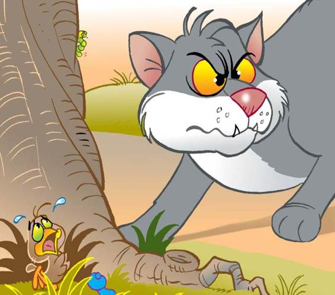

“Please dear Jesus, I am so, so sorry for being a bad, selfish, grabby and unthankful bird. I promise I’ll do my best to learn my lesson. Oh, please keep me safe. And please, somehow help me get back into the nest.”
Closer and closer the old tomcat came to where Billy sat, still hiding in the grass. Suddenly, Chirpy spotted Papa flying towards them, and Mama behind him. Chirpy cried out in her loudest voice, “Hurry! Hurry! Billy is in trouble and there’s a cat coming!”